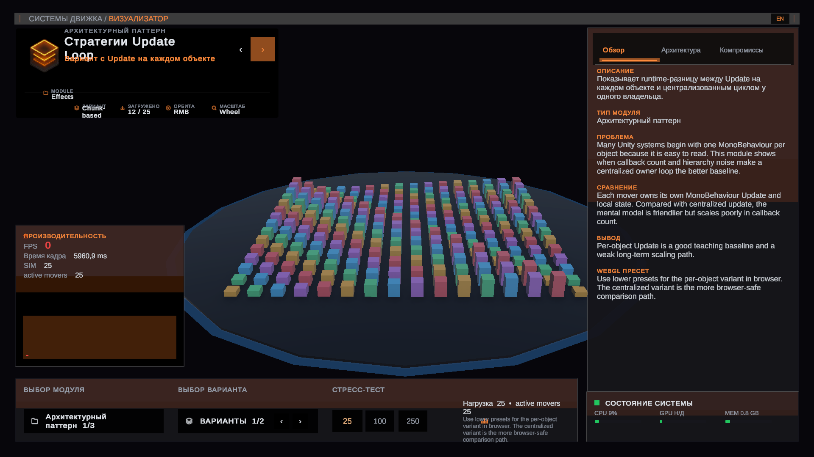
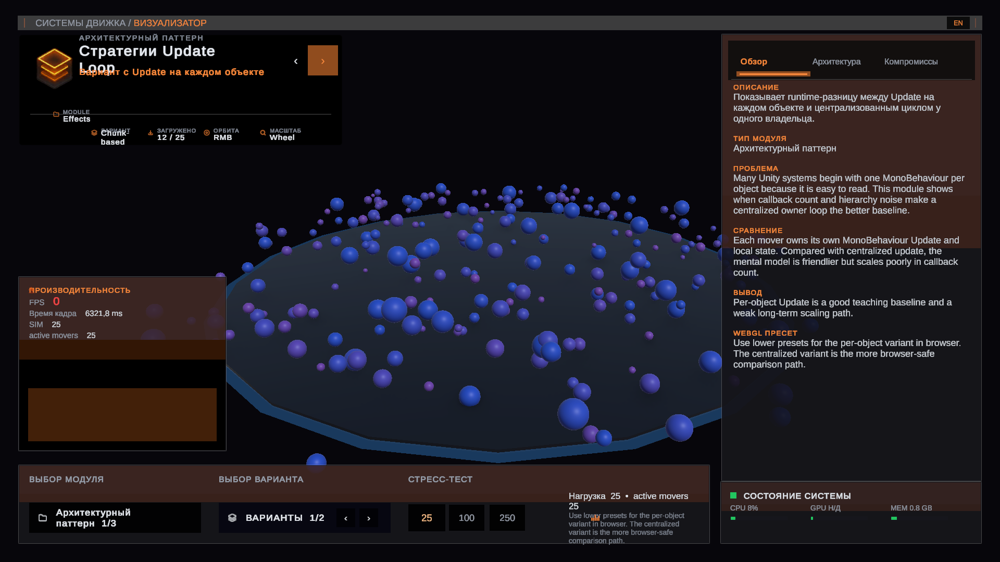
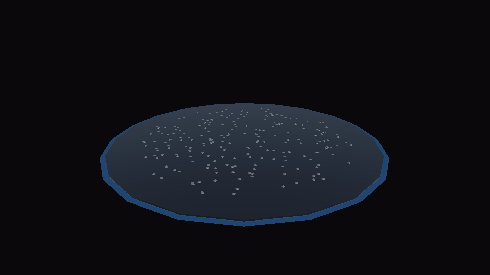

Embedded Unity Runtime
The interactive demo is not available in this version of the page.


Unity architecture review in the browser
Set the context, open the demo, and compare implementation choices without leaving the page.
Interactive Demo
The demo stays beside the notes and module guide.
Embedded Unity Runtime
The interactive demo is not available in this version of the page.


Module Explorer
Start with one module, then switch variants and presets inside the shared runtime.
Architecture Pattern
Compare per-object Update with one owner loop under the same stress presets.

Architecture Notes
Enough structure to understand the system before opening the repository.
01
The shell owns selection, stress state, localization, and lifecycle instead of scene-specific setup.
02
UI presenters subscribe to shared state so the interface stays comparable while modules change underneath it.
03
Active variants implement the same stress and lifecycle contract while preserving their own runtime behavior.
Runtime in five steps
Why it is portfolio-ready
The value is not another Unity scene. The value is one disciplined runtime shell for comparing multiple implementation paths under the same rules.
Suggested Review Flow
This gives the interviewer a clear first click instead of making them guess how the page should be read.
01
Start with `Update Loop`, `Pooling`, or `AI`, depending on whether you want to lead with a pattern or a domain problem.
02
Use the shared controls to compare how different implementation styles behave under the same conditions.
03
Raise the preset in steady steps and watch when ownership, layout, batching, or callback volume starts to matter.
04
Keep the architecture notes beside the runtime so the difference is explained, not just shown.
Browser Metrics Note
The live runtime is real. Some browser-facing comparisons may use curated reference metrics so architectural deltas stay readable across machines. Treat the page as an architecture review surface, not a lab-grade benchmark.